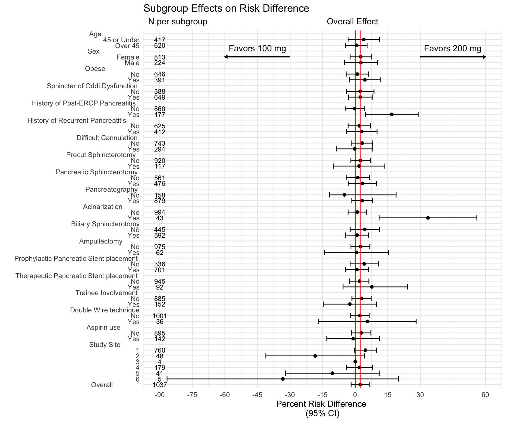

Sometimes editors ask for post hoc analysis of subgroups in clinical trials, and will refuse the manuscript without them. How you can make these in R, in a somewhat kludgy way.
Subgroup plots are a bit of a fetish of medical journals, as a way to rummage through the results, hunting for possible subgroups which might receive more or less benefit than the average participant.
These subgroup analyses, are of course, underpowered, as you are dividing the sample size of the overall study (in which you can usually barely afford to get 80% power) into multiple (underpowered) subgroup analyses. To make matters worse, you are often (at the request of multiple reviewers and editors), analyzing 15-25 subgroups, resulting in a real problem of multiple comparisons, and occasionally yielding an outlier that looks significantly different from the overall effect, but is probably only so by chance.
Many statisticians have weighed in on what a bad idea this practice is (examples provided here, here, and here). However, they are just so much fun to look at that journal editors, particularly in the UK and at the New England Journal of Medicine are very reluctant to give them up.
This has led to some spectacular statistical trolling, most famously in the ISIS study, which showed the benefits of asprin for heart attack published in the Lancet in 1988. The statisticians involved were very resistant to providing a subgroup plot. They did so only under protest, at the editors’ insistence. In fact, if you click through the link to the paper above, and scroll to page 355 (figure 5), and turn your head sideways (or rotate the pdf), you can see that the authors made their first subgroup analysis by astrological birth sign. This is level 10 statistical trolling of the editors.
So how to make this work for your use case?
Let’s walk you through how I did this for a 2020 paper in Lancet Gastroenterology. Note that I have a master’s degree in statistics, not a Ph.D. My day job is in gastroenterology and IBD research. So not being someone like Richard Peto, I am not in a position to do level 10 statistical trolling. So even though I know that this is statistically a bad idea, when the editors demand a subgroup plot, I am going to help out my co-authors and produce one.
We are going to start with the {tidyverse} and then add in {glue} and {scales}. I added {writexl} to store a copy of the oddly-formatted data in Excel for future reference (and to show co-authors how to format it if they wanted to change any #s). The packages {grid} and {gridExtra} are to do some fancy stuff outside of the plotting rectangle.
library(tidyverse)
library(glue)
library(scales)
library(readxl)
library(writexl)
library(grid)
library(gridExtra)You can take two approaches to produce the oddly formatted data. You will need two different kinds of rows:
The rows that name the type of subgroup - like Age, Obesity, Diabetes, etc. - these rows will have a lot of NAs, as they are mostly for display purposes.
The rows that contain the subgroup names, like:
young (<65 years)/old (65 years or older)
Obese/Non-obese
Diabetic/Not diabetic).
These rows will contain counts, estimates, lower confidence bounds and upper confidence bounds.
The example data below are from a randomized controlled trial of 100 mg vs. 200 mg indomethacin in the prevention of post-ERCP pancreatitis.
The full paper, including figure 2 on page 137, which is the resulting plot (with some formatting/UK spellings added by journal staff), can be found at: https://github.com/higgi13425/subgroup_plot/blob/master/lancetgastro_2020_indomethacin.pdf
You can read in an example of this kind of formatted data with the code chunk below.
Note that you have one row with the group name in the group_subgroup column (which has all NAs in the numeric columns), followed by rows with the names of each subgroup with counts, estimates (in this case, risk difference percentages), and upper and lower confidence bounds.
indo_data <- readxl::read_excel("indomethacin_ride.xlsx")
head(indo_data, n=12)
# A tibble: 12 x 6
group_subgroup lcb risk_diff_pct ucb number num
<chr> <dbl> <dbl> <dbl> <dbl> <chr>
1 Age NA NA NA NA 1
2 45 or under -3.27 3.98 11.2 417 2
3 Over 45 -4.37 0.56 5.49 620 3
4 Sex NA NA NA NA 4
5 Female -2.36 2.53 7.42 813 5
6 Male -4.92 2.65 10.2 224 6
7 Obese NA NA NA NA 7
8 Ob No -4.15 1.01 6.17 646 8
9 Ob Yes -2.57 4.47 11.5 391 9
10 Sphincter of Oddi Dysfuncti… NA NA NA NA 10
11 SOD No -4.1 2.28 8.66 388 11
12 SOD Yes -3.07 2.39 7.85 649 12 If your collaborators can grok this format and produce an excel or csv in this layout, you are way ahead of the game. If not, you can manually code these into a dataframe (less fun). See the fairly icky example below. The values for counts and estimates were generated with standard {dplyr} groupby and count, with standard calculations for risk difference as a percentage and confidence bounds, with (purrr} to map over the groups. In a time crunch, I did not come up with a slick way to bind these groups vs subgroups into consecutive rows, and used the highly kludgy manual solution below.
Pretty lame, but it worked at the time.
But if anyone can come up with a slicker way to build the dataframe (using the example below), please let me know.
group_subgroup <- c(
"Age ", "45 or under", "Over 45",
"Sex ", 'Female', 'Male',
"Obese ", "Ob No", "Ob Yes",
"Sphincter of Oddi Dysfunction ", "SOD No", "SOD Yes",
"Hx PEP ", "HP No", "HP Yes",
"Hx Pancreatitis ", "Hpan No", "Hpan Yes",
"Difficult Cannulation ", "DC No", "DC Yes",
"Precut ", "Pre No", "Pre Yes",
"Sphincterotomy ", "Sph No", "Sph Yes",
"Pancreatography ", "Panc No", "Panc Yes",
"Acinarization ", "Ac No", "Ac Yes",
"Biliary Sphincterotomy ", "BS No", "BS Yes",
"Ampullectomy ", "Amp No", "Amp Yes",
"Prophy Pancreatic Stent ", "PS No", "PS Yes",
"Ther Pancreatic Stent ", "PS No", "PS Yes", "Trainee ", "T No", "T Yes",
"Double Wire ", "DW No", "DW Yes",
"Aspirin ", "Asa No", "Asa Yes",
"Site ", "1", "2", "3", "4","5","6",
"Overall ")
risk_diff_pct <- c(NA,3.98,0.56, NA,2.53,2.65, NA, 1.01, 4.47, #obese
NA,2.28,2.39,
NA, -0.22,16.87, NA, 1.88,3.04, NA, 3.27, -0.21, NA, 2.49, 1.81,
NA, 1.25, 3.29, NA,-4.97,3.2, NA, 0.97, 33.55, NA, 4.48, 0.86,
NA, 2.4, 0.63, NA, 4.18, 0.83, NA, 2.0,7.65, NA, 2.93, -2.45,
NA, 2.19, 5.56, NA, 2.82, -0.95, NA, 4.69, -18.43, 0, 1.99, -10.48, -33.33,
2.31)
lcb <- c(NA,-3.27,-4.37, NA,-2.36, -4.92, NA, -4.15, -2.57, #obese
NA,-4.1,-3.07,
NA, -4.6,4.71, NA, -3.24,-4,
NA, -1.53, -8.52, NA, -1.98, -10.06, NA, -4.13, -3.2, NA,-11.82,-1.52,
NA, -3.25, 11.03, NA, -2.27, -4.4, NA, -1.94, -14.11,
NA, -2.35, -4.51, NA,-2.66,-5.6, NA, -1.49, -14.73,
NA, -2.06, -16.97, NA, -1.6, -13.07, NA, -0.42, -41.15, 0, -4.03, -32.04, -86.68,
-1.87)
ucb <- c(NA, 11.2, 5.49, NA,7.42, 10.22, NA, 6.17, 11.52, #obese
NA,8.66,7.85,
NA, 4.16,29.03, NA, 7,10.09,
NA, 8.07, 8.09, NA, 6.95, 13.67, NA, 6.63, 9.78, NA,18.85,7.91,
NA, 5.18, 56.07, NA, 11.23, 6.12, NA, 6.73, 15.36,
NA, 10.72, 6.18, NA,6.33,24.11, NA, 7.35, 9.83,
NA, 6.43, 28.08, NA, 7.26, 11.16, NA, 9.81, 4.28, 0, 8, 11.09, 20.01,
6.48)
number <- c(NA,417,620, NA,813, 224, NA,646,391, #obese
NA,388,649,
NA, 860,177, NA, 625,412,
NA, 743,294, NA, 920, 117, NA, 561,476, NA,158,879,
NA, 994,43, NA, 445, 592, NA, 975, 62,
NA, 336, 701, NA, 945,92, NA, 885,152,
NA, 1001, 36, NA, 895,142, NA, 760,48,4,179,41,5,
1037)
df <- tibble(group_subgroup, lcb, risk_diff_pct, ucb, number)
df <- df %>% mutate(num = as.character(1:62))
write_xlsx(df, "indomethacin_ride.xlsx")This is (mostly) a straightforward ggplot, with x as the risk difference percentage, and y the groups and subgroups, as indicated by the num variable (essentially the row number). (Comment #1)
We then add geom_point() for the point estimates, and geom_errorbarh() for the confidence bounds. (Comment #2)
Then we add a vertical black line to indicate the line of zero effect, and a vertical red line to indicate the overall effect. (Comment #3)
Then add labels, title, and subtitle. (Comment #4)
Then set theme_minimal()
Then add geom_text for the effect estimates (will skip lines for NA) (Comment #5)
Then set the x axis scale (Comment #6)
Followed by a discrete scale for the groups and subgroups on the y axis - note the aligned number of spaces on the right of the groups (Comment #7)
Then add the directional annotations (Comment #8)
and add the arrows below (Comment #9)
g <- ggplot(data = df, # Comment 1
mapping = aes(x = risk_diff_pct,
y = fct_reorder(num, desc(as.numeric(num))))) +
geom_point() + # Comment 2
geom_errorbarh(data= df, aes(x = risk_diff_pct, xmin = lcb, xmax = ucb,
y = fct_reorder(num, desc(as.numeric(num))))) +
geom_vline(xintercept =0, col= 'black') + # Comment 3
geom_vline(xintercept =2.31, col= 'red') +
labs(x ='Percent Risk Difference \n(95% CI)',
y = "", subtitle = " N per subgroup Overall Effect",
title = "Subgroup Effects on Risk Difference") + #Comment 4
theme_minimal() +
geom_text(data=df, size = 3, #Comment 5
aes(x = -90, label = number,
y = fct_reorder(num, desc(as.numeric(num))))) +
scale_x_continuous(limits = c(-90, 60),
breaks =c(-90,-75,-60,-45,-30,-15,0, 15, 30, 60)) + #Comment 6
scale_y_discrete(breaks = 1:62, labels = c(
"Age ", #Comment 7
"45 or Under",
"Over 45",
"Sex ",
"Female",
"Male",
"Obese ",
"No",
"Yes",
"Sphincter of Oddi Dysfunction ",
"No",
"Yes",
"History of Post-ERCP Pancreatitis ",
"No",
"Yes",
"History of Recurrent Pancreatitis ",
"No",
"Yes",
"Difficult Cannulation ",
"No",
"Yes",
"Precut Sphincterotomy ",
"No",
"Yes",
"Pancreatic Sphincterotomy ",
"No",
"Yes",
"Pancreatography ",
"No",
"Yes",
"Acinarization ",
"No",
"Yes",
"Biliary Sphincterotomy",
"No",
"Yes",
"Ampullectomy ",
"No",
"Yes",
"Prophylactic Pancreatic Stent placement ",
"No",
"Yes",
"Therapeutic Pancreatic Stent placement ",
"No",
"Yes",
"Trainee Involvement ",
"No",
"Yes",
"Double Wire technique",
"No",
"Yes",
"Aspirin use ",
"No",
"Yes",
"Study Site ",
"1","2", "3","4","5","6",
"Overall "
)) +
annotate("text", label = "Favors 100 mg", x=-45, y=59.5, col='black') + #Comment 7
annotate("text", label = "Favors 200 mg", x=45, y=59.5, col='black') +
geom_segment(aes(x=-30, xend=-60, y = 58, yend=58), #Comment 8
linejoin = "mitre",
colour = "black",
arrow= arrow(length = unit(0.1, "cm"),type = "closed")
) +
geom_segment(aes(x=30, xend=60, y = 58, yend=58),
linejoin = "mitre",
colour = "black",
arrow= arrow(length = unit(0.1, "cm"),type = "closed")
)
g
Depending on what your particular journal requires. Note that you may want to tweak width and height based on your own data and the number of subgroups.
ggsave("subgroup_plot.jpeg", width = 7.5, height = 9, units = "in", dpi = 320)
ggsave("subgroup_plot.tiff", width = 7.5, height = 9, units = "in", dpi = 320)
ggsave("subgroup_plot.pdf", width = 7.5, height = 9, units = "in", dpi = 320)